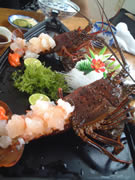

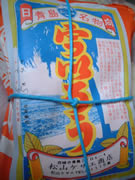
前回もそーだったけれども宮崎紀行は終始食べ物で、胃薬必須。
まずは伊勢海老。
あちこちで伊勢海老食べたけれども、宮崎の某食堂の伊勢海老が日本一だと思う。
甘さと歯ごたえ。
三重、伊勢の伊勢海老よりもはるかに美味しい。もちろん都内なんか目じゃないし。
今回はタマゴ付きでした。鮮やかなオレンジ。絵の具のチューブを絞ったって言ってもおかしくないぐらいに綺麗な発色なのです。
実は伊勢海老がたまごを抱えている時期は禁猟期らしいのだけど、ここは養殖をしているから出してくれました。
ウニに似ているけれどももっと上品にして歯ごたえを良くした感じ。
デザートは「ういろう」パッケージで確認いただきたいのだけど、
「宮川ういろう」と呼んでおります。ホントは宮川ういろうなんて存在しないんだけど。
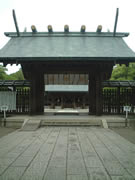
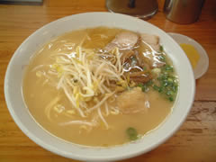
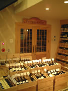
なかなか立派です。神殿のあたりは厳かで、かなり距離がある御神鏡に自分がくっきり映るので、何度も手をｊ振ってみたりして。
お昼は宮崎ラーメン。栄陽軒。卵ラーメンのフダには修正のあとがある。卵
想像するとちょっとホラーだ。なんのためらいも無くメニューのフダに書いてしまったのだろーけど。
ちなみに宮崎ラーメン。激ウマです。昨今のラーメンブームにあまり取りざたされたいのが不思議なぐらい。
あとね、なぜか宮崎のラーメンはタクアンが付いてきます。なぜなの？
その後、日本でも５本の指に入ると思われるカリフォルニアワインの品揃えの「パリ１６区」へホント凄い。
ゴロゴロ凄いワインが木箱に詰められているんだよね…
ちなみに写真の奥に見える扉はレンタルセラー。
宮崎にキャンプに来る巨人軍の選手。桑田とかがワインを置いているそーな。
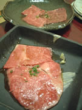
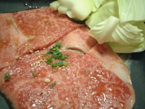
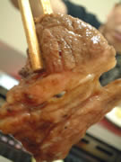
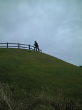
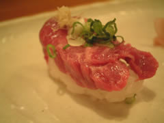
ここはハラミが美味しい。
あと印象深いのがミノ。
ジューシーで甘いの。
臭みが無くて旨みだけを堪能できるミノはなかなか無いのよね。
と 2日目終了。
次の日は思ったとおり飲みすぎで、昼過ぎに行動。だだっぴろい公園なんかに行って、
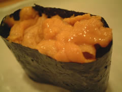 |
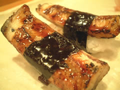 |
もうめちゃくちゃですね。頑張ってますからたまには酒池焼肉林＆寿司。を堪能させてください。
馬刺し握り、地物雲丹、鰻。色々握ってもらったけれどもこの３品が絶品でした。
馬肉はとにかく脂身がコクのある甘さ。バターを濃厚にしてくどさを抜いたような。さっぱりとした赤身とシャリの三位一体。口腔に広がる桃源の宴。
なかなかグルメ雑誌っぽくなってきましたね。
最近の愛読雑誌が「Danchu」なんで許してくださいませ。
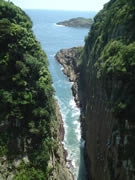
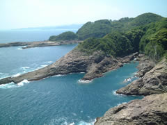
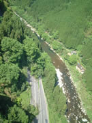
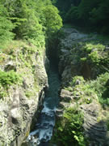 |
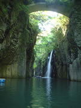 |
馬が背を経て、高千穂峡へ。 |

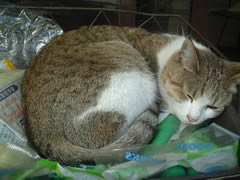
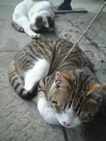
店先に荷造り用紐で繋がれた猫がいました。
「もーどーでもいいのにゃ」
そんな感じの猫。
デジカメの電池が切れたので、おもちゃ屋さんに入って電池を買おうとしたら、店主が困ったような楽しそうな顔をしている。
店内では子供たち５人ぐらいがガラスケースに入った五月人形を囲んでなんだかんだ言っている。
「なんじゃ？」
と思って覗き込むとガラスケースが割れてる（笑）
「家に電話しよーよ」「親呼んでこよーよ」「こんなとこでボール押し込んだ（？）のが悪い」などなど…
その日は丁度５月５日こどもの日。
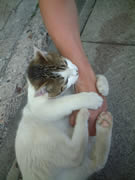
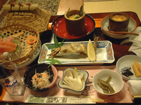
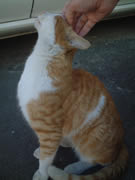
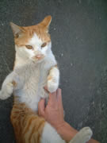
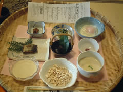
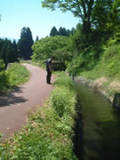
あそんであそんで。
高千穂町は猫が営業活動盛んですね。ほんとに。
食べ物は旅館の２食。山の幸系です。
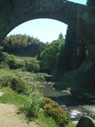
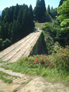
通尖橋。５千円出せば、橋の真ん中から水を出してくれます。
手すりの無い橋の上を渡るのはなかなかスリル満点。
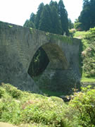
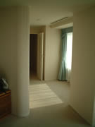
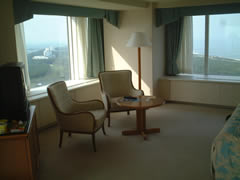
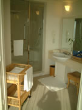
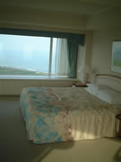
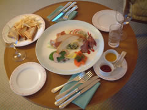
とにかく広い！都内のシティホテルのジュニアスイートぐらいあるんじゃないかしらん？
部屋を出るのがもったいないのでルームサービス。ホットサンドとアンティパスタ。あとはワインを飲んだ暮れました。
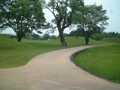
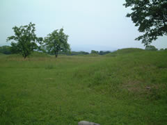
あ、テレタビーズだ！なんか向こうの円墳からカラフルなキャラクターが出てきそうな…